1088C12 water pump - r+r for versions with air conditioner
- Path
- Procedures > 10 ENGINE > 1088 ENGINE COOLING > 1088C water pump and thermostat > 1088C12 water pump - r+r for versions with air conditioner
- Kind
- repair procedure (removal / refitting; the operation number is the code)
- Applies to
- engines: 1.6 TS , 1.8 TS, 2.5 V6, 3.2 V6, 1.9 JTD 8v , 2.4 JTD 10v; all production periods
- Interactive page
- https://sloeber94.github.io/elrnDB-a156/en/#/3237627
Applies to: engines: 2.5 V6, 3.2 V6; all production periods
 Removing
Removing
 Refitting
RefittingProceed with the removal 4450B10 Front WHEEL (one) - R.R. (Right side).
Proceed with the removal 7055B64 Engine compartment DUST shield in front wheel arch (one), left or right - R.R. (Right side).
Proceed with the removal 1092G10 single engine belt r r .
Proceed with the removal 1092A12 crankshaft pulley - r+r for versions with air conditioner .
Proceed with the removal 1032D12 timing system protective cover(s) - r + r .
Proceed with the removal 1032B14 toothed timing belt - r + r for timing adjustment or replacement versions with air conditioner .
Proceed with the removal 1092G14 engine component single belt mobile tensioner - r + r .
Proceed with the removal 1092G20 engine component single belt fixed tensioner - one - r + r .
Working via the wheel arch, undo the bolt fixing the alternator spacer to the right cylinder head timing belt rear cover.
1. Undo the bolts (1a) for the driven pullies for the left and right cylinder heads using the tool (1b) for counter-torque.
 | Name | Country |
|---|---|---|
1b | Counter-torque | 1.822.146.000 |
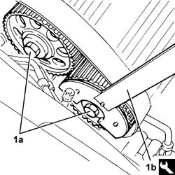
Applies to: engines: 2.5 V6, 3.2 V6; all production periods
1. Remove the driven pullies (1a) for the left and right cylinder heads using the tool (1b).
| Name | Country |
|---|---|---|
1b | Extractor | 1.860.954.001 |
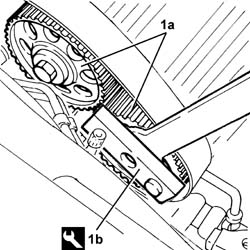
Applies to: engines: 2.5 V6, 3.2 V6; all production periods
1. Undo the bolts (1a) and remove the timing belt fixed tensioners (1b).
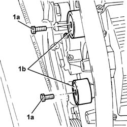
Applies to: engines: 2.5 V6, 3.2 V6; all production periods
1. Undo the bolts (1a) and remove the rear timing gear covers (1b).
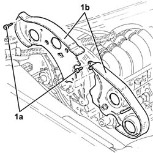
Applies to: engines: 2.5 V6, 3.2 V6; all production periods
1. Undo the bolts (1a) and remove the water pump pulley (1b).
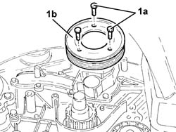
Applies to: engines: 2.5 V6, 3.2 V6; all production periods
1. Undo the bolts fixing the water pump cover.
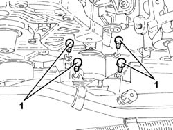
Applies to: engines: 2.5 V6, 3.2 V6; all production periods
1. Undo the bolts (1a) and remove the water pump (1b) complete with gasket.
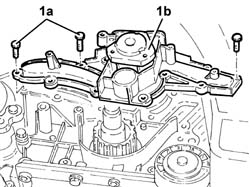
Applies to: engines: 2.5 V6, 3.2 V6; all production periods
Refitting
Removing1. Place the water pump (1a), complete with gasket, back in its housing and secure it tightening the bolts (1b) to the recommended torque.
 | Fastening | Component | Ø | Value (daNm) |
|---|---|---|---|---|
1b | Bolt | COOLANT PUMP | M6 | 0.7 ÷ 0.9 |
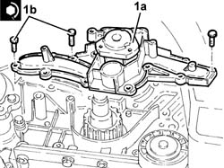
Applies to: engines: 2.5 V6, 3.2 V6; all production periods
Tighten the water pump cover fixing bolts.
Place the water pump drive pulley back in its housing and secure it tightening the bolts to the recommended torque.
| Fastening | Component | Ø | Value (daNm) |
|---|---|---|---|---|
- | Bolt | COOLANT PUMP PULLEY | M6 | (Water pump side) 0.7 ÷ 0.9 |
Place the side timing drive belt rear covers back in their housings and secure them using the bolts.
1. Place the timing belt fixed tensioners (1a) back in their housings and secure them tightening the bolts (1b) to the recommended torque.
| Fastening | Component | Ø | Value (daNm) |
|---|---|---|---|---|
1b | - | FIXED TENSIONER | M8 | 1.7 ÷ 2.1 |
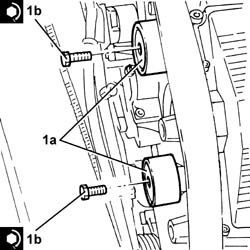
Applies to: engines: 2.5 V6, 3.2 V6; all production periods
Place the left and right cylinder head driven pullies back in their housings and secure them without tightening the bolts.
Tighten the bolt fixing the alternator front spacer to the right cylinder head timing belt rear cover.
Proceed with the refitting 1092G20 engine component single belt fixed tensioner - one - r + r .
Proceed with the refitting 1092G14 engine component single belt mobile tensioner - r + r .
Proceed with the refitting 1032B14 toothed timing belt - r + r for timing adjustment or replacement versions with air conditioner .
Proceed with the removal 1016A42 left hand cylinder head ignition coil cover - r+r .
Proceed with the removal 1072B50 sleeves connecting air capacity box to inlet manifold is - r+r .
Proceed with the removal 5510C14 ignition coil/s - r+r .
Proceed with the removal 1016A36 left hand and right hand cam cover - r+r .
Proceed with the refitting 1016A36 left hand and right hand cam cover - r+r .
Proceed with the refitting 5510C14 ignition coil/s - r+r .
Proceed with the refitting 1072B50 sleeves connecting air capacity box to inlet manifold is - r+r .
Proceed with the refitting 1016A42 left hand cylinder head ignition coil cover - r+r .
Proceed with the refitting 1032D12 timing system protective cover(s) - r + r .
Proceed with the refitting 1092A12 crankshaft pulley - r+r for versions with air conditioner .
Proceed with the refitting 1092G10 single engine belt r r .
Proceed with the refitting 7055B64 Engine compartment DUST shield in front wheel arch (one), left or right - R.R. (Right side).
Proceed with the refitting 4450B10 Front WHEEL (one) - R.R. (Right side).
Applies to: engines: 1.6 TS , 1.8 TS; all production periods
Removing
RefittingPlace the car on the lifting bridge.
Disconnect battery negative pole.
 | Name | Connector |
|---|---|---|
- | Battery |
7055B54 under-engine guard - r r
1016A40 ignition coil cover on cylinder head- r+r
1016A20 single cam cover - r + r and replace gasket
- 4450B80 cap of one wheel - r+r
4450B10 Front WHEEL (one) - R.R.
7055B64 Engine compartment DUST shield in front wheel arch (one), left or right - R.R.
1092G10 single engine belt r r
1092G20 engine component single belt fixed tensioner - one - r + r
Applies to: all engines; all production periods
Applies to: engines: 1.6 TS , 1.8 TS; all production periods
Applies to: engines: 1.8 TS; all production periods
1. Unscrew screws (1a) fixing hydrosteering fluid reservoir (1b).
2. Unscrew screws (2a) and remove timing belt (2b) L-H side protection.
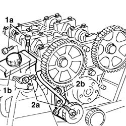
Applies to: engines: 1.6 TS , 1.8 TS; all production periods
2. Unscrew screws (2a) and remove timing belt (2b) L-H side protection.
Applies to: engines: 1.6 TS , 1.8 TS; all production periods
1. Unscrew screws (1a) of intake side camshaft pulley by using tool as countertorque.
| Name | Country |
|---|---|---|
- | Counter-torque | 1.822.155.000 |
2. Remove intake side camshaft pulley.
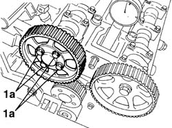
Applies to: engines: 1.6 TS , 1.8 TS; all production periods
Unscrew screws (1a) and remove water pump (1b) complete with O-Ring.
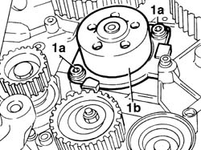
Applies to: engines: 1.6 TS , 1.8 TS; all production periods
Refitting
RemovingFit water pump complete with a new O-Ring and fix it with its screws to torque.
| Fastening | Component | Ø | Value (daNm) |
|---|---|---|---|---|
- | Bolt | ORDINARY PREPARATION | M6 | 1.7 - 2.1 |
Fit intake side camshaft pulley and fix it with its screws without tightening them.
Fit timing belt L-H side protection and fix it with its screw.
| Fastening | Component | Ø | Value (daNm) |
|---|---|---|---|---|
- | Bolt | BELT PROTECTION COVER | M6 | 0.9 |
Unloose screw of exhaust side camshaft pulley by using tools as countertorque.
| Name | Country |
|---|---|---|
- | Counter-torque | 1.822.146.000 |
| Name | Country |
|---|---|---|
- | Counter-torque | 1.822.156.000 |
Applies to: all engines; all production periods
Applies to: engines: 1.6 TS , 1.8 TS; all production periods
1016A20 single cam cover - r + r and replace gasket
- 4450B80 cap of one wheel - r+r
4450B10 Front WHEEL (one) - R.R.
7055B64 Engine compartment DUST shield in front wheel arch (one), left or right - R.R.
1092G10 single engine belt r r
1092G20 engine component single belt fixed tensioner - one - r + r
1032D12 timing system protective cover(s) - r + r
1092A10 Crankshaft services PULLEY - R.R.
1016A40 ignition coil cover on cylinder head- r+r
Fit engine compartment lower shield.
Applies to: engines: 1.9 JTD 8v , 2.4 JTD 10v; all production periods
Removing
Refitting4450B10 Front WHEEL (one) - R.R.
7055B64 Engine compartment DUST shield in front wheel arch (one), left or right - R.R.
1092G10 single engine belt r r
1092A12 crankshaft pulley - r+r for versions with air conditioner
1032D12 timing system protective cover(s) - r + r
1008C10 power unit upper reaction link r r .
1016A10 sound-proofing cover - r + r .
1008C14 engine link bracket - r r
1032B61 timing belt pulley - r r
1060G22 cam angle sensor - r r
1. Undo the bolts (1a) and remove the water pump (1b) complete with O-Ring (1c).
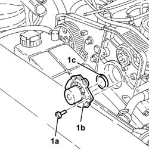
Applies to: engines: 1.9 JTD 8v , 2.4 JTD 10v; all production periods
Refitting
RemovingFit the water pump complete with a nwe O-Ring and fix it tightening the bolts to the recommendd torque.
| Fastening | Component | Ø | Value (daNm) |
|---|---|---|---|---|
- | Bolt | COOLANT PUMP | M6 | 2.1 - 2.6 |
1060G22 cam angle sensor - r r
1032B61 timing belt pulley - r r
1008C14 engine link bracket - r r
1016A10 sound-proofing cover - r + r .
1008C10 power unit upper reaction link r r .
1032D12 timing system protective cover(s) - r + r
1092A12 crankshaft pulley - r+r for versions with air conditioner
Topics linked from this page (25)
- 1008C10 power unit upper reaction link r r
- 1008C14 engine link bracket - r r
- 1016A10 sound-proofing cover - r + r
- 1016A20 single cam cover - r + r and replace gasket
- 1016A36 left hand and right hand cam cover - r+r
- 1016A40 ignition coil cover on cylinder head- r+r
- 1016A42 left hand cylinder head ignition coil cover - r+r
- 1032B14 toothed timing belt - r + r for timing adjustment or replacement versions with air conditioner
- 1032B61 timing belt pulley - r r
- 1032B62 a/c duct pulley - r r
- 1032D12 timing system protective cover(s) - r + r
- 1060G22 cam angle sensor - r r
- 1072B50 sleeves connecting air capacity box to inlet manifold is - r+r
- 1088D24 rigid pipe for coolant inlet to water pump - r + r
- 1092A10 Crankshaft services PULLEY - R.R.
- 1092A12 crankshaft pulley - r+r for versions with air conditioner
- 1092E10 counter-rotating shaft drive toothed belt - r + r
- 1092G10 single engine belt r r
- 1092G14 engine component single belt mobile tensioner - r + r
- 1092G20 engine component single belt fixed tensioner - one - r + r
- 4450B10 Front WHEEL (one) - R.R.
- 5510C14 ignition coil/s - r+r
- 7055B54 under-engine guard - r r
- 7055B64 Engine compartment DUST shield in front wheel arch (one), left or right - R.R.
- A1B Battery ( BATTERY NEGATIVE )